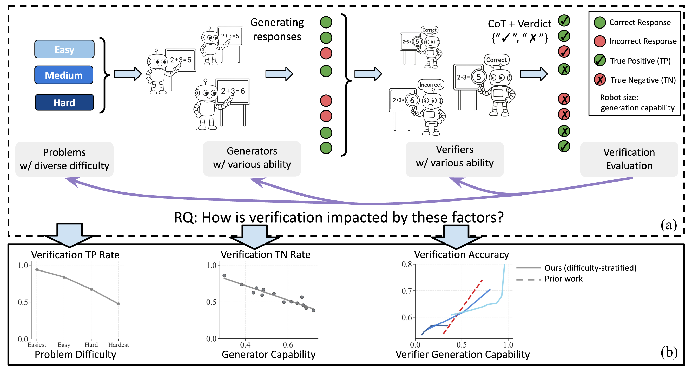
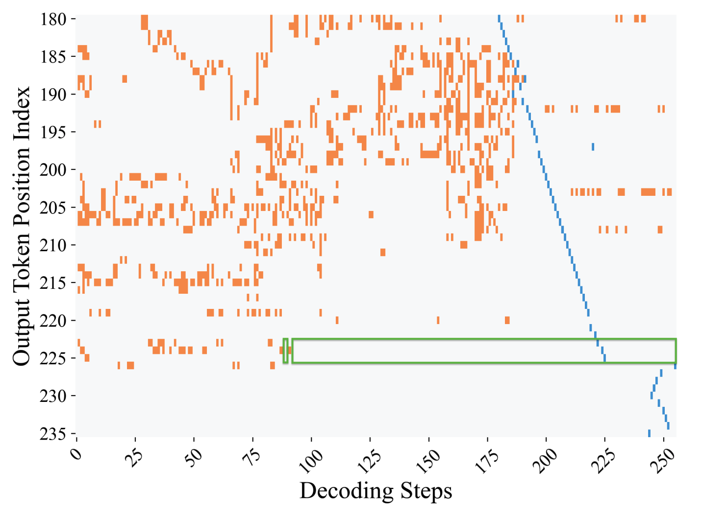
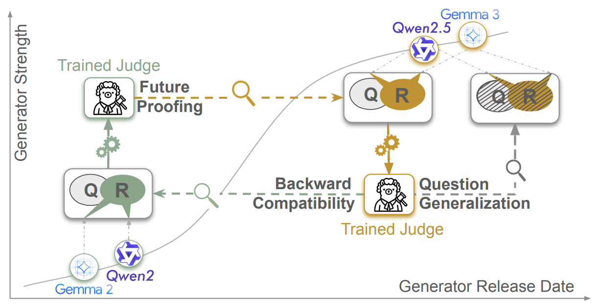
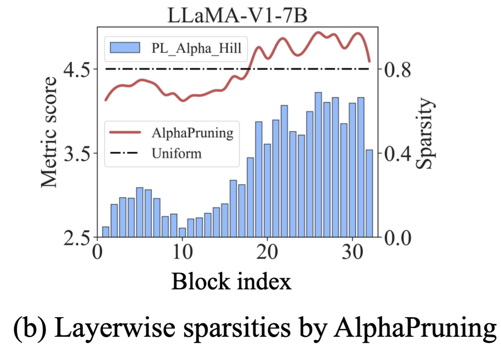
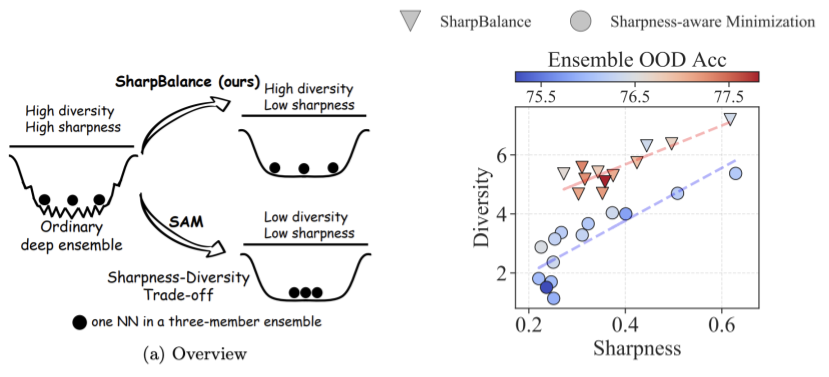
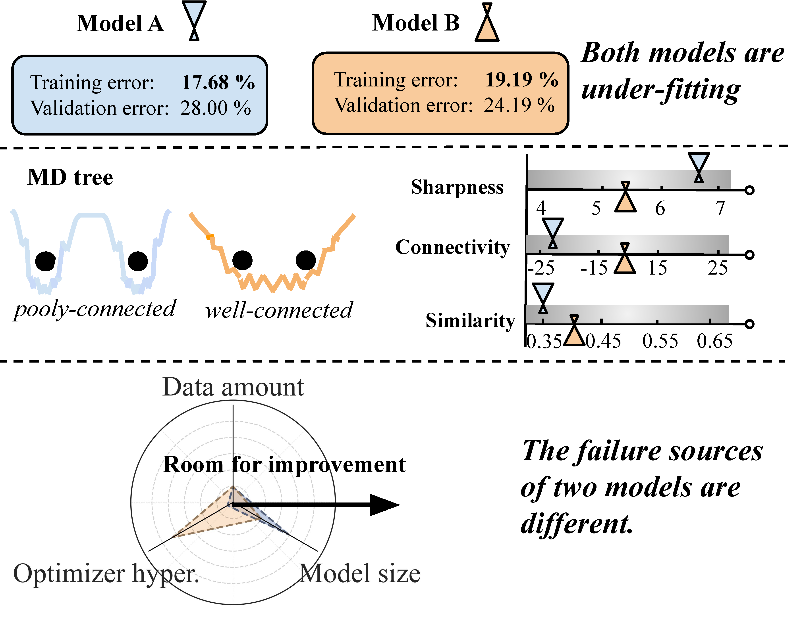
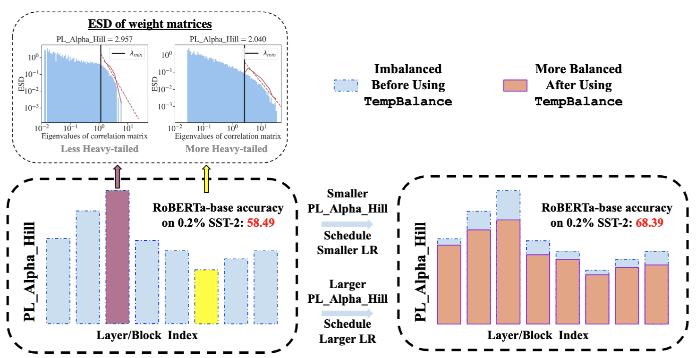
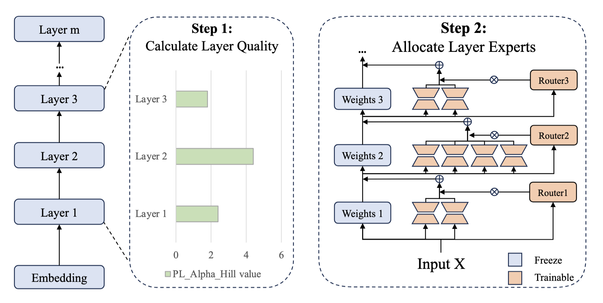

I am a CS PhD candidate (2023-) at Dartmouth College. I earned my Master's degree in EECS at UC Berkeley.
Previously, I interned at Salesforce AI Research.
Research: My research focuses on developing evaluation metrics and systems for ML models, spanning three dimensions: training quality, output reliability and hyperparameter.
This research contributes to
- Efficient training: LLM fine-tuning [4, 9, 10], hyperparameter optimization [7]
- Auto-evaluation: LLM verification for reasoning [1], LLM-judge fine-tuning [3]
- Inference optimization: pruning [5, 8], parallel decoding [2], ensembling [6]
|
News
⭐ Jan 2026: Three papers got accepted to ICLR 2026 (one 1st author), thanks to my excellent collaborators and advisors! See you in Rio.
Jun 2025 - Sep 2025: I joined Salesforce AI Research as a Research Intern, check out our two ICLR papers on auto-evaluation ([1, 3]).
📣 Aug 2024: I passed the PhD qualification exam!
|
Recent Publications
First-author papers are highlighted and * indicates equal contribution
|
|

[1]
|
Variation in Verification: Understanding Verification Dynamics in Large Language Models
Yefan Zhou,
Austin Xu,
Yilun Zhou,
Janvijay Singh,
Jiang Gui,
Shafiq Joty
ICLR 2026
Paper /
Project /
Twitter /
Code
[auto-evaluation, judge for reasoning, test-time scaling]
|
|

[2]
|
Diffusion Language Models Know the Answer Before Decoding
Pengxiang Li,
Yefan Zhou,
Dilxat Muhtar,
Lu Yin,
Shilin Yan,
Li Shen,
Yi Liang,
Soroush Vosoughi,
Shiwei Liu
ICLR 2026
Paper /
Code
[efficient inference, diffusion language models, parallel decoding]
|
|

[3]
|
On the Shelf Life of Finetuned LLM-Judges: Future Proofing, Backward Compatibility, and Question Generalization
Janvijay Singh,
Austin Xu,
Yilun Zhou,
Yefan Zhou,
Dilek Hakkani-Tür,
Shafiq Joty
ICLR 2026
Paper
[judge fine-tuning, preference optimization]
|
 [4]
[4]
|
Temperature Balancing, Layer-wise Weight Analysis, and Neural Network Training
{Yefan Zhou*,
Tianyu Pang*},
Keqin Liu,
Charles H. Martin,
Michael Mahoney,
Yaoqing Yang
NeurIPS 2023 Spotlight
Paper /
Code /
Video
[efficient training, NN optimizer, weight/layer analysis]
|
|

[5]
|
AlphaPruning: Using Heavy-Tailed Self Regularization Theory for Improved Layer-wise Pruning of Large Language Models
{Haiquan Lu*,
Yefan Zhou*},
Shiwei Liu,
Zhangyang Wang,
Michael W. Mahoney,
Yaoqing Yang
NeurIPS 2024
Paper /
Code
[efficient inference, LLM pruning, weight/layer analysis]
|
|

[6]
|
Sharpness-diversity tradeoff: improving flat ensembles with SharpBalance
{Haiquan Lu*,
Xiaotian Liu*,
Yefan Zhou*,
Qunli Li*},
Kurt Keutzer,
Michael W. Mahoney,
Yujun Yan,
Huanrui Yang,
Yaoqing Yang
NeurIPS 2024
Paper /
Code
[Ensembling, Data selection, OOD]
|
|

[7]
|
MD tree: a model-diagnostic tree grown on loss landscape
{Yefan Zhou*,
Jianlong Chen*},
Qinxue Cao,
Konstantin Schürholt,
Yaoqing Yang
ICML 2024
Paper /
Code /
Video
[Scaling law, Hyperparameter tuning for training]
|
 [8]
[8]
|
A Three-regime model of Network Pruning
Yefan Zhou,
Yaoqing Yang,
Arin Chang,
Michael Mahoney
ICML 2023
Paper /
Code /
Video
[NN pruning, efficient inference]
|
|

[9]
|
Model Balancing Helps Low-data Training and Fine-tuning
Zihang Liu,
Yuanzhe Hu,
Tianyu Pang,
Yefan Zhou,
Pu Ren,
Yaoqing Yang
EMNLP main 2024 Oral
Paper /
Code
[LLM fine-tuning, Layer quality analysis]
|
|

[10]
|
AlphaExpert: Assigning LoRA Experts Based on Layer Training Quality
Peijun Qing,
Chongyang Gao,
Yefan Zhou,
Xingjian Diao,
Pu Ren,
Yaoqing Yang,
Soroush Vosoughi
EMNLP main 2024
Paper
[LLM efficient fine-tuning, Mixture-of-expert]
|
Work Experiences
-
Jun 2025 - Sep 2025: Research Intern @ Salesforce AI Research, working with Austin Xu, Yilun Zhou and Shafiq Joty.
-
Jan 2023 - Aug 2023: Research Intern @ UC Berkeley ICSI and Sky Computing Lab, working with Yaoqing Yang and Michael Mahoney.
|
Recent Talks
-
Nov. 2024: Talk at Snowflake, "Weight Matrix Diagnostics and Improved Large Language Model Compression and Fine-tuning"
-
Jan. 2024: Talk at AI-TIME, "Phase transition, loss landscape and model diagnostics"
-
Oct. 2023: Talk at UC Berkeley/ICSI TrojAI onsite, "Layer-wise Weight Analysis and Neural Network Training"
-
Mar. 2023: Talk at UC Berkeley/ICSI TrojAI onsite, "A Three-regime model of Network Pruning"
|
Services
Conference Reviewer
Journal Reviewer
|
Last Updated: Oct 2025.
Website Template by Jon Barron
|
|
{kind=link}